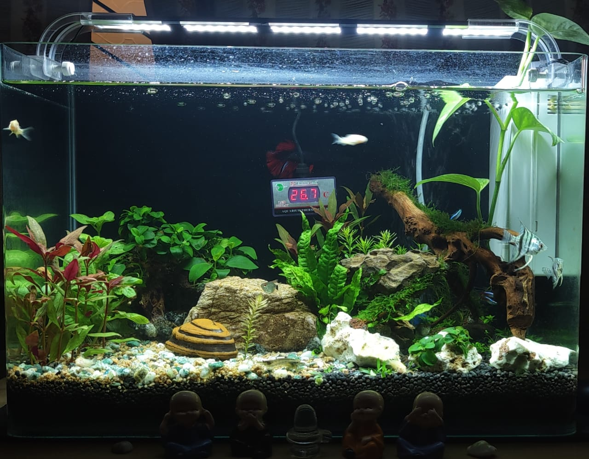

So this is another activity namely aquascaping. Aquascaping is a process where we will create a small nature theme in an aquarium including live plants and fish. The process of making an aquascape might take around a week or two, but the final result is eye-pleasing and reflects a small part of nature. And here is a picture of my aquascape.
